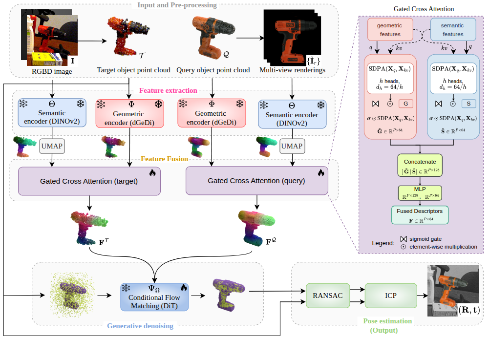
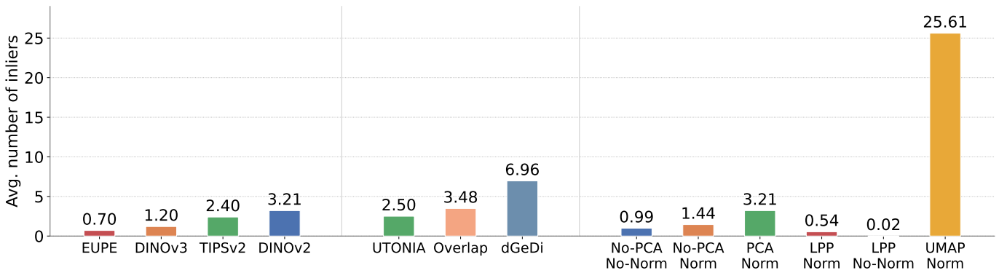

Conditional flow matching has enabled a step forward in object 6D pose estimation, achieving state-of-the-art performance by progressively denoising and registering object representations to observed scenes. Existing methods require training task-specific encoders supervised on object-scene overlap and rely on trivial feature fusion strategies to resolve pose ambiguities. We present FunFlow6D, a novel flow matching-based formulation that leverages features from geometric and appearance foundation models for pose estimation, eliminating the need for task-specific encoder training. We also introduce a cross attention-based fusion mechanism that dynamically combines geometric and appearance features to provide richer conditioning for the flow matching module. Experiments on four datasets from the BOP benchmark show that FunFlow6D outperforms the previous state of the art while reducing supervision requirements and memory overhead. Extensive ablations validate the contribution of each proposed component.

Overview of FunFlow6D.
Given the canonical query point cloud $\mathcal{Q}$ and an RGBD image $\textbf{I}$ as input (top left), FunFlow6D recovers the 6D object pose $(\textbf{R}, \textbf{t})$ (bottom right) through three stages: feature extraction, generative denoising, and pose estimation.
Throughout, $\mathcal{Q}$ acts as a static anchor and the flow operates only on the target $\mathcal{T}$, lifted from the masked depth of $\textbf{I}$.
Feature extraction: A frozen geometric encoder $\Phi$ (dGeDi) and a frozen semantic encoder $\Theta$ (DINOv2, reduced via UMAP) produce per-point descriptors that are fused
by a bidirectional gated cross-attention module (right inset) into $\textbf{F}^\mathcal{Q}, \textbf{F}^\mathcal{T}$.
Colors encode feature similarity: corresponding regions across $\mathcal{Q}$ and $\mathcal{T}$ share similar colors.
Generative denoising: A conditional flow-matching network $\Psi_\Omega$ (DiT), conditioned on $\textbf{F}^\mathcal{Q},
\textbf{F}^\mathcal{T}$, learns a velocity field that canonicalizes $\mathcal{T}$ into $\hat{\mathcal{T}}$ while the anchor velocities are zeroed.
Pose estimation: The flow-induced correspondences between $\mathcal{T}$ and $\hat{\mathcal{T}}$ yield the camera-to-canonical
transform via a RANSAC-based orthogonal Procrustes solver followed by ICP, and the pose $(\textbf{R}, \textbf{t})$.
6D pose accuracy on the BOP benchmark, evaluated in terms of AR.
| # | Method | Models | Params | LM-O | TUD-L | IC-BIN | YCB-V | Avg |
|---|---|---|---|---|---|---|---|---|
| 1 | HccePose(BF) | 34 | 41.5M | 80.5 | 94.4 | 72.4 | 91.1 | 84.6 |
| 2 | GDRNPP (BOP23) | 4 | 106.8M | 79.4 | 96.4 | 73.7 | 92.8 | 85.6 |
| 3 | Flose | 4 | 89.2M | 86.1 | 98.8 | 74.8 | 92.9 | 88.2 |
| 4 | FunFlow6D (ours) | 4 | 43.1M | 87.1 | 98.9 | 75.3 | 93.6 | 88.7 |
| 5 | Improvement wrt row 3 | - | - | +1.0 | +0.1 | +0.5 | +0.7 | +0.5 |

Average number of inliers for various appearance encoders (left), geometric encoders (center), and dimensionality reduction techniques (right). An object-scene correspondence is considered an inlier if the correspondence error is smaller than 3% of the object diameter.
Ablation study on LM-O. Key: = trained, = frozen, - = not used. The default configuration of FunFlow6D is highlighted.
| # | Geom. Enc. | App. Enc. | Dim. Red. | Feat. fusion | Pose estim. | Pose refin. | AR |
|---|---|---|---|---|---|---|---|
| 1 | overlap-aware | - | - | - | SVD | ICP | 83.5 |
| 2 | overlap-aware | DINOv2 | PCA | Point-level sum | RANSAC | ICP | 86.1 |
| 3 | dGeDi | DINOv2 | PCA | Point-level sum | RANSAC | ICP | 81.8 |
| 4 | dGeDi | DINOv2 | UMAP | Point-level sum | RANSAC | ICP | 83.6 |
| 5 | dGeDi | DINOv2 | UMAP | No attention | RANSAC | ICP | 85.7 |
| 6 | dGeDi | DINOv2 | UMAP | Cross attention | RANSAC | ICP | 86.3 |
| 7 | dGeDi | DINOv2 | UMAP | Gated attention | RANSAC | - | 85.8 |
| 8 | dGeDi | DINOv2 | UMAP | Gated attention | RANSAC | ICP | 87.1 |
Per-image inference time breakdown on LM-O. The 50-step Euler integration dominates the pipeline, as is inherent to iterative generative sampling.
@inproceedings{funflow6d2026hamza,
author = {Hamza, Amir and Boscaini, Davide and Poiesi, Fabio},
title = {Foundational feature fusion for conditional flow matching in 6D pose estimation},
booktitle = {BMVC},
year = {2026},
}